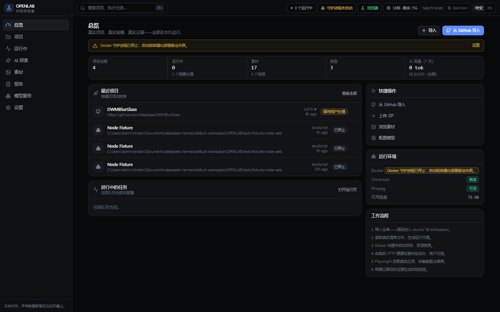
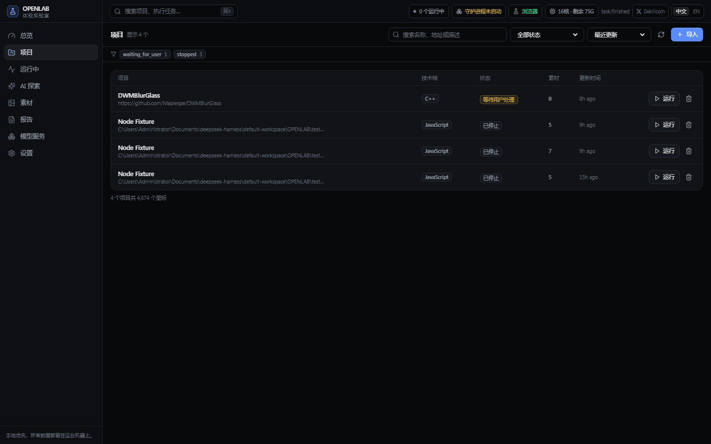
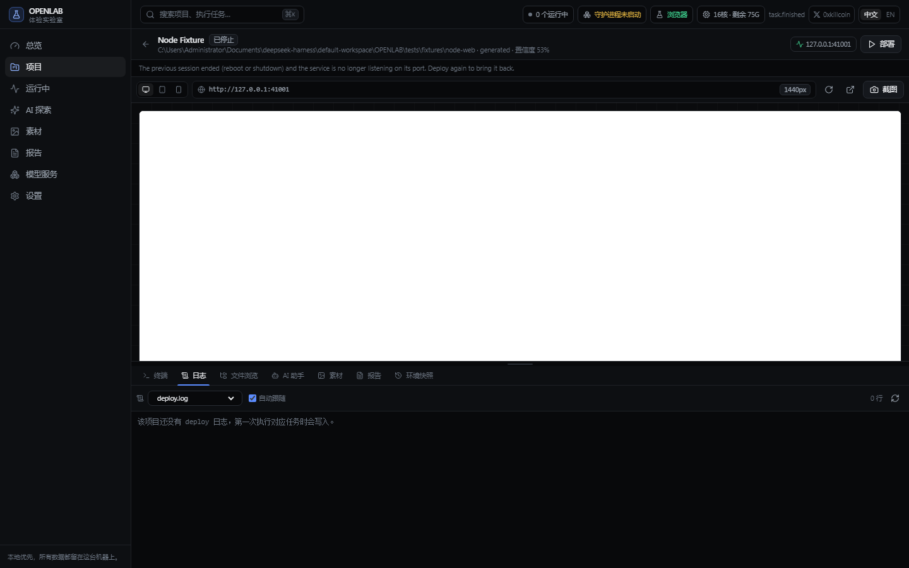
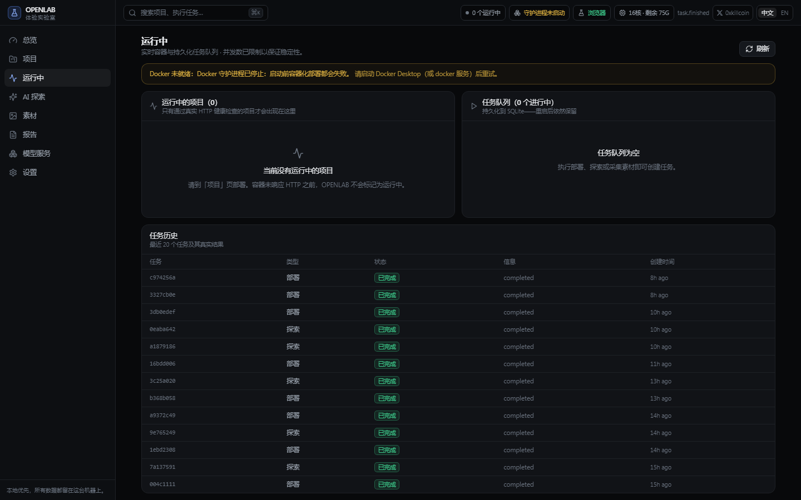
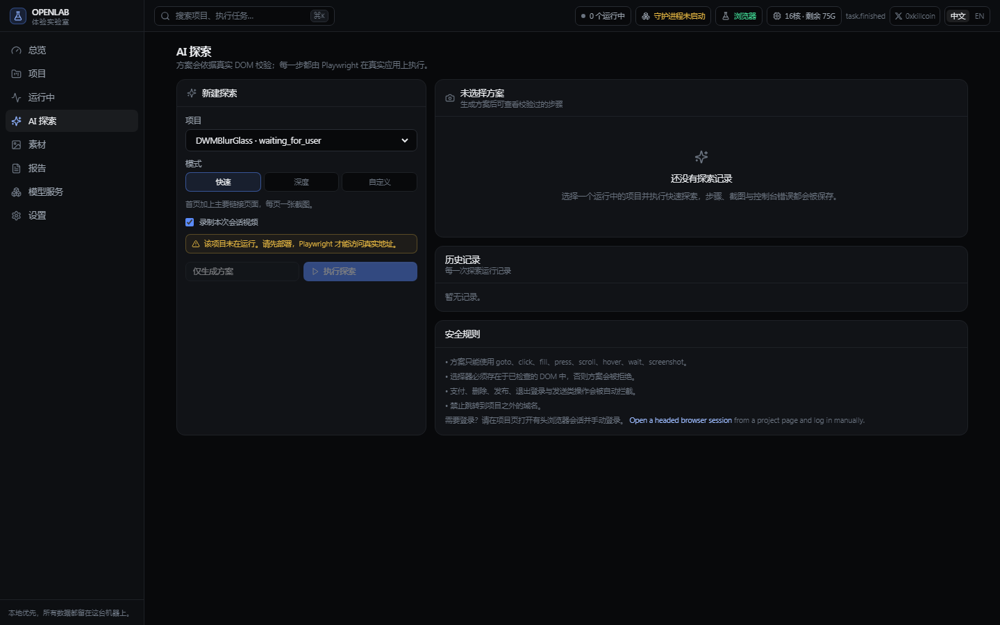
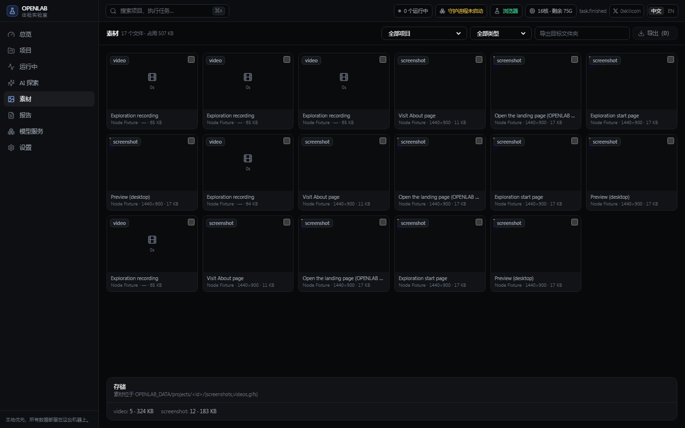
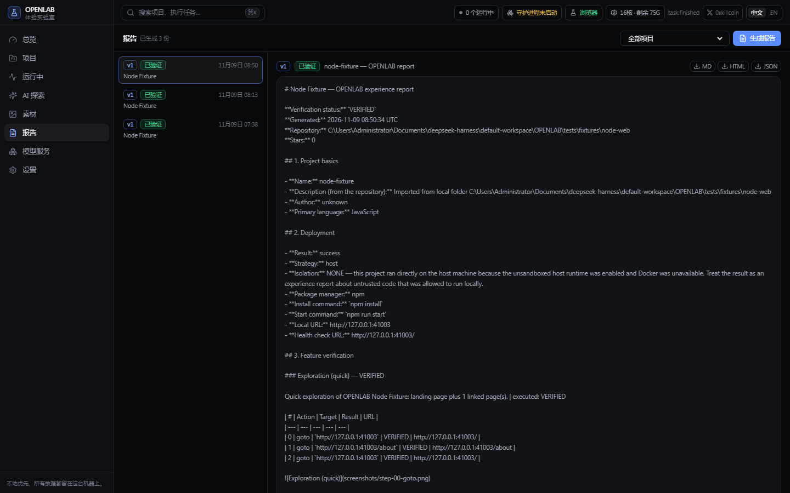
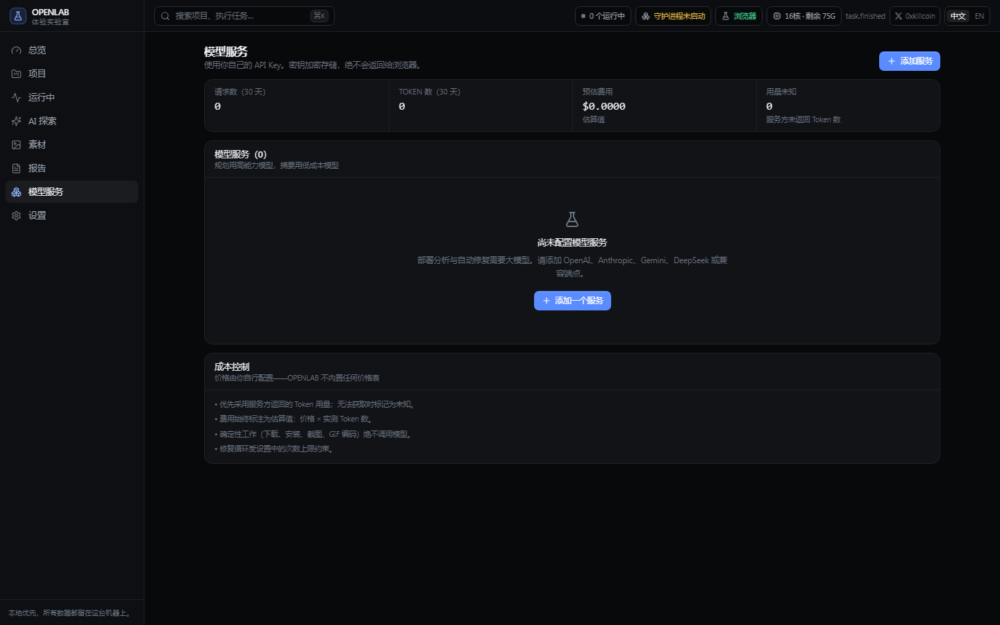
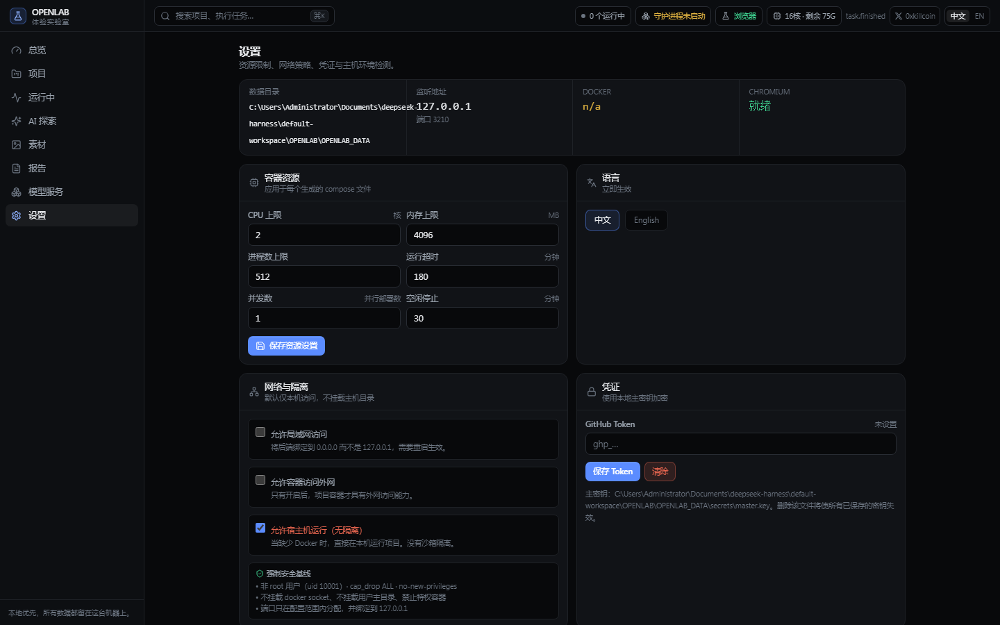

把开源项目
真正跑起来，再写体验报告
导入一个 GitHub 仓库，OPENLAB 分析真实源码、生成运行方案、用 Docker 部署、 让浏览器真的点进去操作、采集截图与录屏，最后生成一份有据可查的体验报告。
Import → Analyse → Deploy → Explore → Capture → Report. Every claim in the report traces back to a real container, a real HTTP response and a real browser session.

核心能力
不是又一个 GitHub 导航站
确定性的活儿交给程序：下载、解包、装依赖、起容器、健康检查、截图、编码。 模型只负责两件事 —— 规划运行方案，以及在真实失败时生成最小修复补丁。
多来源导入
公开 GitHub 链接、带 Token 的私有仓库、ZIP 上传、本地文件夹。解包前检查路径穿越、软链接、文件数与解压体积。
基于真实文件的分析
读取 package.json、各类 lock、pyproject、requirements、Dockerfile、compose、Makefile、Cargo、go.mod、.env.example、.nvmrc —— 每个结论都标注来源与置信度。
默认安全的容器
非 root（uid 10001）、cap_drop ALL、no-new-privileges、CPU/内存/PID 限额、不挂载主机目录、不暴露 Docker Socket、端口只绑 127.0.0.1。
只有真实成功才算成功
必须收到真实 HTTP 响应才会标记 RUNNING。缺 Docker、需要 GPU、缺 API Key、多服务栈 —— 一律如实报 WAITING_FOR_USER。
有上限的自动修复
收集真实错误日志 → 定位相关文件 → 生成补丁写入隔离的 workspace → 只重试失败的那一步。默认最多 3 次，之后交还给你，补丁可查看可回滚。
真实浏览器探索
快速 / 深度 / 自定义三种模式，方案会对着真实 DOM 校验：未知动作、跨域跳转、不存在的选择器、危险操作（支付/删除/发布/退出）一律拒绝。
素材中心
多视口（桌面/平板/手机）、多比例（16:9 / 4:3 / 1:1 / 3:4）、整页截图、会话录屏、FFmpeg 生成 GIF 与 MP4，按项目归档，可批量导出。
可追溯的报告
Markdown / HTML / JSON 三格式，状态分为已验证、部分验证、未验证、失败、受阻。README 的宣传语永远不会被当成验证结论。
自带 API，用量透明
OpenAI / Anthropic / Gemini / DeepSeek / 任意兼容端点。密钥用本机主密钥加密，逐次记录 Token、延迟与估算费用，不认识的用量标为未知。
中文优先的双语界面
默认中文，右上角一键切英文，选择会持久化。511 个词条 / 1022 条译文，有测试守护：缺翻译、占位符不一致、英文混入中文都会让构建失败。
双模式交付
Tauri 2 桌面应用，或者直接浏览器访问 127.0.0.1:3210。两种模式共用同一套后端、同一个数据库、同一个数据目录。
能恢复的环境
环境快照记录 compose、运行方案与变量名（绝不存值），一键恢复；删除项目时可保留素材与报告；重启后自动把失效的「运行中」状态纠正过来。
界面
截图由 OPENLAB 自己拍
下面每一张都是 Playwright 驱动真实浏览器在运行中的工作台上截的，不是设计稿。
重新生成：python scripts/capture-ui-screenshots.py








快速开始
三行命令跑起来
需要 Python 3.12+、Node 18+（只为构建前端）、Docker（部署项目时必需）、Playwright Chromium、FFmpeg。
Windows
# 克隆并启动（自动建 venv、装依赖、装 Chromium、构建前端） git clone https://github.com/iiiiiiiiiiiiiKK/openlab cd openlab powershell -ExecutionPolicy Bypass -File .\scripts\openlab-start.ps1
macOS / Linux
# 同样的流程 git clone https://github.com/iiiiiiiiiiiiiKK/openlab cd openlab chmod +x scripts/*.sh ./scripts/openlab-start.sh
然后
打开 http://127.0.0.1:3210 → 右上角「从 GitHub 导入」→ 粘贴仓库地址 → 在项目页点「部署」→ 看日志 → 在 AI 探索里跑一次真实操作 → 素材与报告自动生成。
架构
四层，边界清晰
engine/ 不依赖 FastAPI，可以脱离服务器单独测试；路由只做 HTTP，业务逻辑在 services 里；
前端所有请求走统一客户端。
┌──────────────────────────────────────────────────────────────────┐ │ apps/web (React 18 + TS + Vite + Tailwind) apps/desktop (Tauri 2) │ · 9 个路由，多面板项目工作区 · 负责拉起后端 └───────────────────────────┬──────────────────────────────────────┘ │ HTTP + WebSocket (127.0.0.1:3210) ┌───────────────────────────▼──────────────────────────────────────┐ │ apps/backend (FastAPI) │ routers/ 薄 HTTP 层 │ services/ 编排：导入、部署、探索、报告 │ db.py SQLAlchemy + SQL 迁移（SQLite / WAL） │ events.py 进程内事件总线 → /ws/events └───────────────────────────┬──────────────────────────────────────┘ │ 普通 Python 导入（没有 HTTP） ┌───────────────────────────▼──────────────────────────────────────┐ │ engine/（确定性，可单测） │ core · project_importer · project_analyzer · docker_manager │ task_scheduler · ai_agent · browser_automation │ media_processor · asset_manager · report_generator · runtime └──────────────────────────────────────────────────────────────────┘
| 层 / 模块 | 职责 | 关键保证 |
|---|---|---|
project_importer | URL 解析、GitHub API + codeload 下载、ZIP/TAR 安全解包 | 不需要本机安装 git |
project_analyzer | 扫描清单文件、推断技术栈、生成带证据的运行方案 | 不照搬模板，每个字段都标来源 |
docker_manager | CLI 封装、Dockerfile / compose 生成、策略守卫、健康检查 | 特权容器 / Socket / 主机挂载直接拒绝 |
task_scheduler | SQLite 持久化队列，取消 / 暂停 / 恢复 / 重试 | 重启后自动重新排队 |
ai_agent | 三种接口格式适配、用量计费、补丁与修复循环 | 修复次数有上限，Diff 可回滚 |
browser_automation | Chromium 启动、DOM 检查、截图、方案生成与执行 | 危险动作黑名单（中英双语） |
media_processor | FFmpeg 能力探测、转码、裁剪、封面、GIF | 按真实能力选策略，缺能力返回 409 并说明 |
report_generator | MD / HTML / JSON 渲染与状态判定 | 只引用记录到的证据 |
边界
它做不到什么，也写在文档里
一个只会报成功的工具没有价值。OPENLAB 在以下情况会明确停下来说明原因。
编译型 / 桌面项目
Visual Studio 解决方案、Windows 壳扩展、CMake / Bazel 二进制、JVM 或 .NET 桌面应用会被识别为 native，部署返回具体原因（例如「检测到 .sln 解决方案」），不会假装跑通，也不会生成虚假的体验报告。
没有 Docker
容器部署直接停在 WAITING_FOR_USER 并给出安装指引。可选开启「宿主机运行（无隔离）」，但界面、数据库字段与报告都会标注「未沙箱化」。
多服务栈
compose + 数据库一类的项目，在没有 Docker 时会被拒绝，而不是只起一个 web 进程就说成功 —— 那样应用其实连不上数据库。
受限的 FFmpeg
Playwright 自带的精简版只有 png + libvpx。WebM 可以，GIF 走「抽帧 + Pillow 合成」的兜底路径，MP4 会返回 409 并说明缺哪个编码器。